Élan · Strona stworzona z AI
Strona klubu fitness Élan: 8 podstron, wersja na komputer i telefon, zrealizowana ze sztuczną inteligencją.

Szczegóły projektu
Projekt
Nowa strona dla Élan, klubu fitness z wieloma zajęciami w Paryżu (boks, HIIT, cardio, trening siłowy, pilates, joga). Osiem podstron: Strona główna, Nasze zajęcia, Grafik, Cennik, Trenerzy, Aktualności, Kontakt i Informacje prawne, zaprojektowane na komputer i telefon. Cel: zachęcić do zarezerwowania pierwszych zajęć.
Moja rola
Kierowniczka projektu: prowadziłam AI od A do Z. Określiłam podstrony i treści, wybrałam zdjęcia klubu i klimat, pilnowałam identyfikacji „Miejska energia”, a następnie testowałam każdą podstronę i zlecałam poprawki aż do efektu końcowego.
Narzędzia
Claude (AI) do tworzenia podstron · identyfikacja „Miejska energia” (granat, koral, bordo) · kroje Barlow i Barlow Condensed · testy na komputerze i telefonie.
Mój proces
Od specyfikacji do gotowej strony, w ośmiu krokach.
- 1
Brief
Przejęcie potrzeb klientki i identyfikacji „Miejska energia”: ruch, wolność, postęp.
- 2
Architektura strony
Określenie ośmiu podstron i ścieżki odwiedzającego aż do rezerwacji zajęć próbnych.
- 3
Treści
Zajęcia, trenerzy, grafik, cennik, aktualności: krótkie, motywujące teksty dopasowane do grupy docelowej.
- 4
Wizualizacje
Wybór zdjęć klubu (strefa boksu, sala HIIT, studio jogi) i gradientów na zdjęciach.
- 5
Strony interaktywne
Grafik filtrowany według zajęć i trenera, częste pytania o cennik, formularz kontaktowy.
- 6
Wersja mobilna
Wersja mobilna każdej podstrony, z rozwijanym menu.
- 7
Poprawki
Odciążenie strony głównej, przeniesienie żywienia do aktualności z artykułem „jak dobrze jeść”, zmiana kolorów.
- 8
Testy
Testowanie każdej podstrony na komputerze i telefonie, notowanie problemów i zlecanie poprawek.
Przeglądaj stronę
Wybierz podstronę i przewiń ekran, aby ją obejrzeć, w wersji na komputer lub telefon.
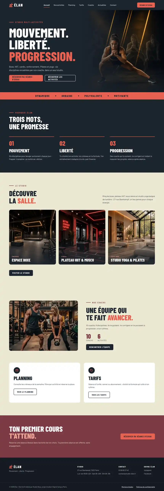
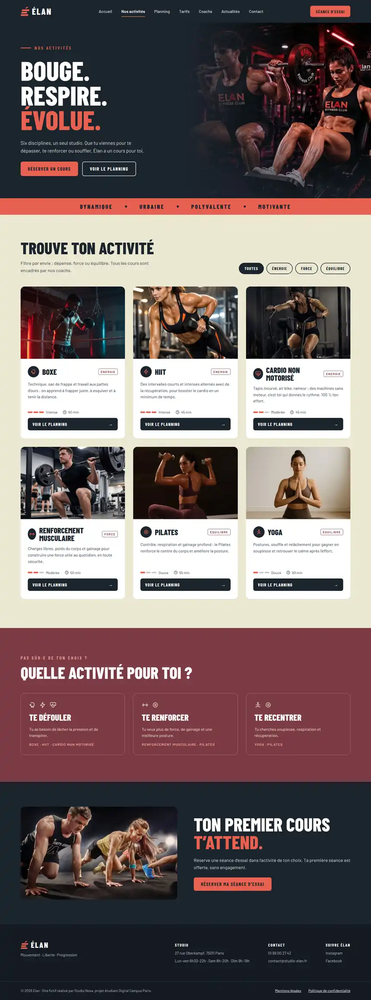
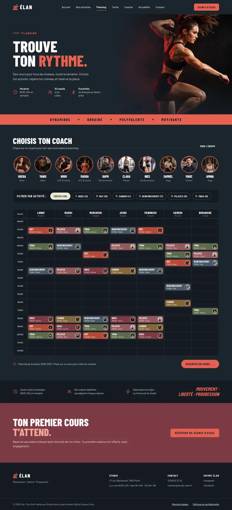
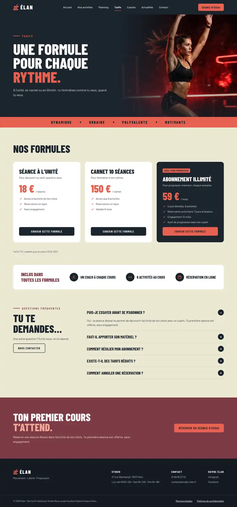
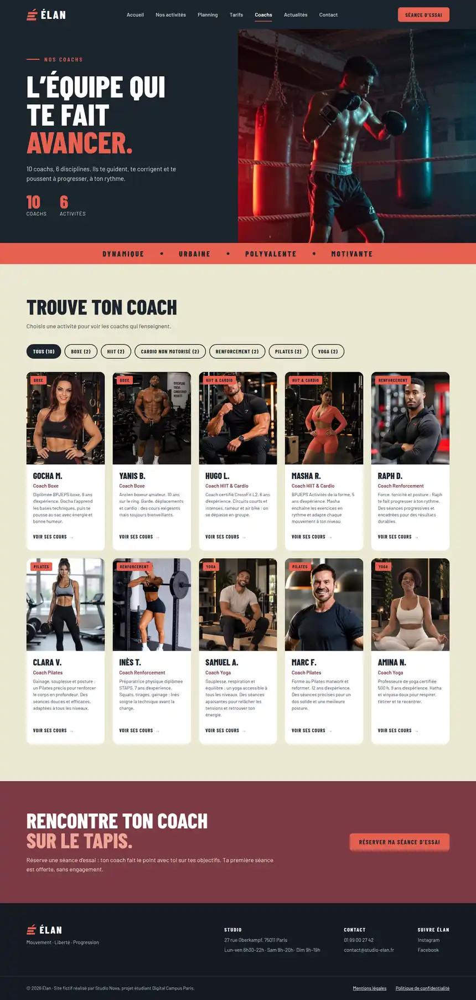
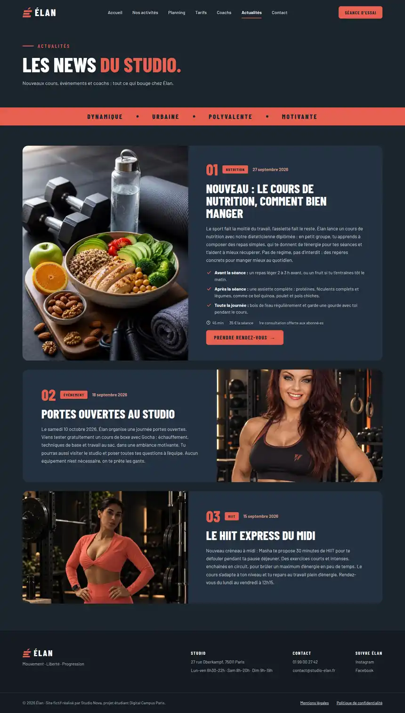
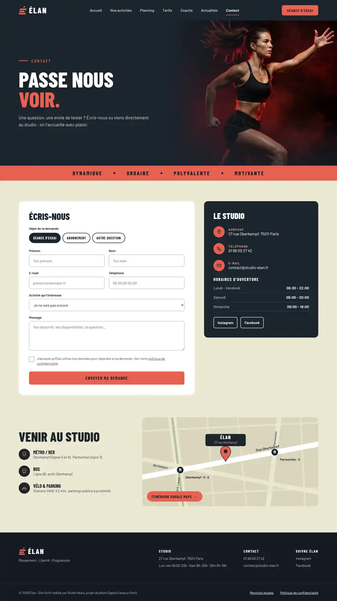
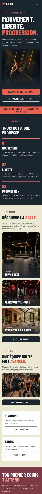
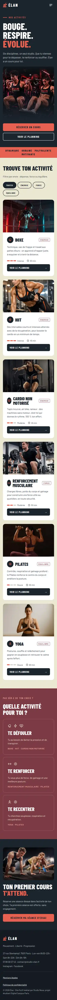
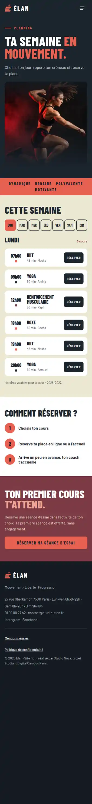
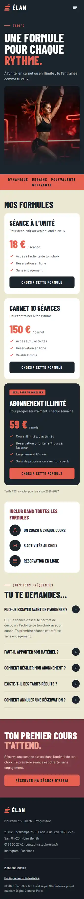
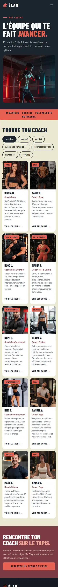
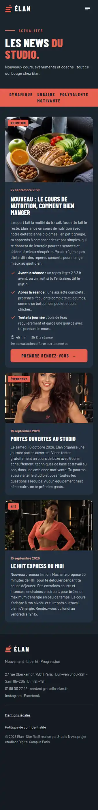
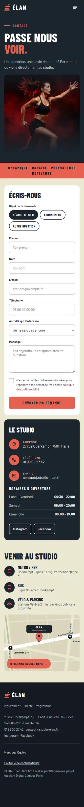
Jak to działa na telefonie
Sześć kluczowych gestów odwiedzającego na telefonie. Kliknij krok, aby go zobaczyć.
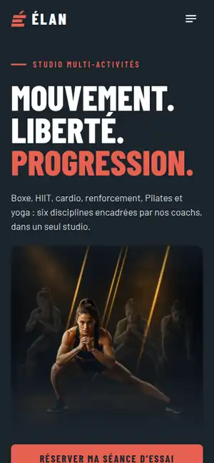
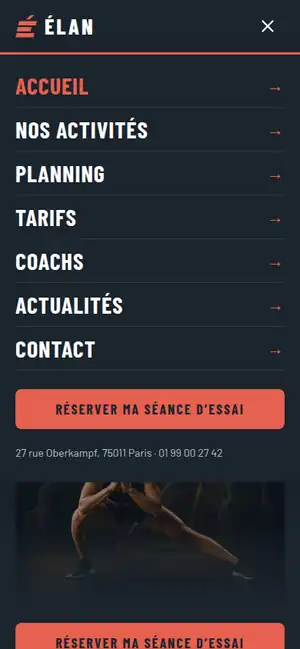
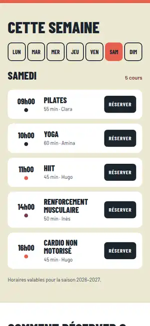
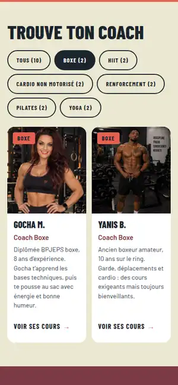
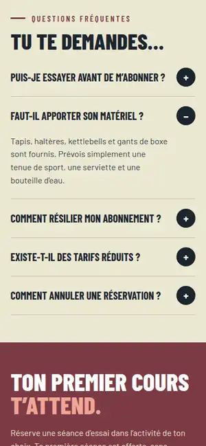
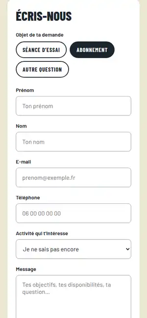